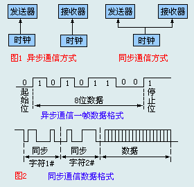
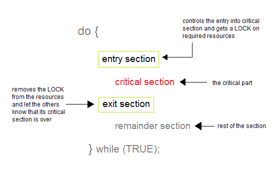

...... 待续
。。。。。 待续
In computer science, synchronization refers to one of two distinct but related concepts: synchronization of processes, and synchronization of data. Process synchronization refers to the idea that multiple processes are to join up or handshake at a certain point, in order to reach an agreement or commit to a certain sequence of action. Data synchronization refers to the idea of keeping multiple copies of a dataset in coherence with one another, or to maintain data integrity. Process synchronization primitives are commonly used to implement data synchronization.
进程同步/异步
同步通信和异步通信
同步和异步通信(synchronous and asynchronous communication)：
- 同步是指：发送方发出数据后，等接收方发回响应以后才发下一个数据包的通讯方式。
- 异步是指：发送方发出数据后，不等接收方发回响应，接着发送下个数据包的通讯方式。
可以通过打电话/发邮件的例子来理解，例子来自stackoverflow。
同步通信: 当我通过打电话叫你时，我拨打你的电话，然后等待你接听。然后在电话上你说了些内容，同时我在听。在你结束后，我给你发送了数据(也就是说话)，同时你接收了数据(听我说话)。在通信结束时，我们中的一个说END OF TRANSMISSION(就是再见)，另一个说Acknoledged(就是再见)，然后都挂断。
异步通信：我写了一封信，拿到了邮局寄给你。在这期间，我没有等待，我做了很多其他的事情。然后你收到了邮件。在你阅读邮件的时候，我仍然再做其他的事情。然后你写给我了回信并寄给我。在这些事件中，都没有涉及到我。另一天，我得到了(同步)的信号(信件)来自系统(邮局)。系统(邮局)说，”这里有封信给你“。然后我停止我的工作，收你的邮件，阅读你的回信。然后我根据你的回信做了一些事情。但是这些事情你都不会注意到，因为你没有参与我对你异步回信所做的事情。

在串行通信中，由于是一位一位地进行数据传送。为了把每个字节区别开来，需要收发双方在传送数据的串行信息流中，加入一些标记信号位。在数据中根据所添加的标记信号位的不同方式，分成同步通信和异步通信两种。
- “异步通信”是一种很常用的通信方式（效率较低）异步通信在发送字符时，发送端可以在任意时刻开始发送字符，因此必须在每一个字符的开始和结束的地方加上标志，即加上开始位和停止位，以便使接收端能够正确地将每一个字符接收下来。所传送的数据以字节为单位。每个字节前加上一位起始位，每个字节的后面加上停止位。好处：异步通信的好处是通信设备简单、便宜，但传输效率较低。
- “同步通信” 通信双方必须先建立同步，即双方的时钟要调整到同一个频率。收发双方不停地发送和接收连续的同步比特流。一种是使用全网同步，用一个非常精确的主时钟对全网所有结点上的时钟进行同步。一种是使用准同步，各结点的时钟之间允许有微小的误差，然后采用其他措施实现同步传输。同步通信是把所传送的数据以多个字节（100字节以上）为单位，在其前后添加标志。
执行同步/异步
起源： Oddly enough "Synchronously" means "using the same clock" so when two instructions are synchronous they use the same clock and must happen one after the other. "Asynchronous" means "not using the same clock" so the instructions are not concerned with being in step with each other. That's why it looks backwards, the term is not referring to the instructions relationship to each other. It's referring to each instructions relationship to the clock. Hope that helps.
Critical Section Problem
A Critical Section is a code segment that accesses shared variables and has to be executed as an atomic action. It means that in a group of cooperating processes, at a given point of time, only one process must be executing its critical section. If any other process also wants to execute its critical section, it must wait until the first one finishes.
